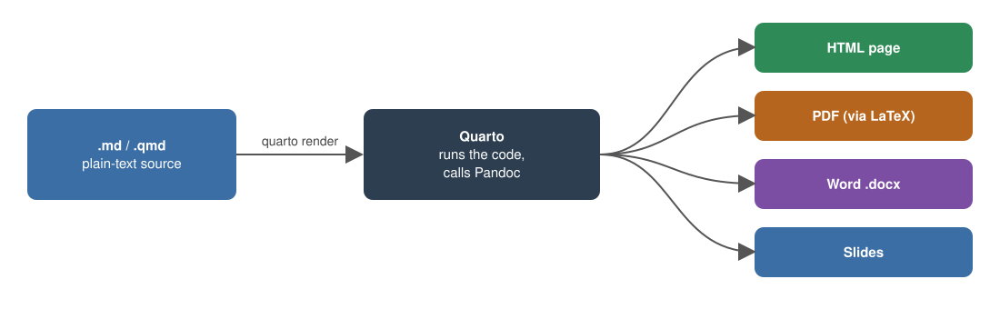

Reproducible Documents and AI-Assisted Coding
2026-11-09
The course book goes deeper on everything in this lecture. Read before or after class:
.bib fileTip
The three demo files are yours to download, break, and reuse: Example Files, Week 7.
“Instead of imagining that our main task is to instruct a computer what to do, let us concentrate rather on explaining to human beings what we want a computer to do.” - Donald Knuth, Literate Programming (1984)
.tsv and .qmd)Markdown is a lightweight language: you type plain text with a few marks, and a renderer turns it into formatted output.
You type:
Headers mark the document’s structure - one # per level:
You type:
You get:
Form follows function.
A table is rows of |-separated cells; the dashed line separates the header from the body (a colon on the dashes sets alignment):
| Genotype | n | Mean |
|---|---|---|
| A | 40 | 11.2 |
| B | 40 | 14.6 |
An image is one line - a path or URL, with optional sizing:
Quarto extends Markdown into a scientific publishing system.
A .qmd file is Markdown plus three ingredients:
One .qmd source renders to HTML, PDF, Word, slides, websites, and books
This slide deck, the course site, and the course book are all Quarto.
--- fences mark it off at the very topkey: value pairsformat:
html, pdf, docx, revealjs, …)execute:
{r} runs it through knitr{python} through Jupyterreticulate) - details in Ch. 16#|Options go inside the chunk, one per line - identical in every language:
| Option | Effect |
|---|---|
echo: false |
Run the code, hide the code (manuscripts!) |
eval: false |
Show the code, don’t run it |
include: false |
Run it, show nothing (setup chunks) |
fig-cap: |
Figure caption |
label: fig-... |
Makes the figure numbered and referenceable |
Tip
Set document-wide defaults in the YAML under execute:
Override chunk by chunk only where needed.
“We measured 600 genes in 80 fish (Figure 1).”
You type:
You get:
Save your eyes
Five types: note, tip, warning, important, caution.
Warning
This step overwrites results/.
@ it anywhereLabel a figure, table, equation, or section; reference it with @; Quarto numbers everything, and renumbers on every render:
| Type | Label | Reference |
|---|---|---|
| Figure | #| label: fig-name or {#fig-name} |
@fig-name |
| Table | #| label: tbl-name or {#tbl-name} |
@tbl-name |
| Equation | $$ ... $$ {#eq-name} |
@eq-name |
| Section | ## Heading {#sec-name} |
@sec-name |
You type:
You get - a live, clickable reference to a figure that sits several slides ahead:
The render pipeline (Figure 1) runs your code every time.
$LaTeX notation dropped between $ signs flows with the sentence:
| You type | You get |
|---|---|
$\sigma = E\varepsilon$ |
\(\sigma = E\varepsilon\) |
$\bar{x} \pm 1.96\, s/\sqrt{n}$ |
\(\bar{x} \pm 1.96\, s/\sqrt{n}\) |
$\mu = 2.5\ \mathrm{kPa}$ |
\(\mu = 2.5\ \mathrm{kPa}\) |
$H_0\!: \beta_1 = 0$ |
\(H_0\!: \beta_1 = 0\) |
_, superscripts with ^, Greek letters by name (\sigma, \mu, \beta)$$A $$ pair puts the expression on its own centered line:
\[Pr(Y=r) = \frac{e^{-\mu}\mu^r}{r!}\]
\[f(x) = \frac{1}{\sigma\sqrt{2\pi}} \, e^{-\frac{(x-\mu)^2}{2\sigma^2}}\]
\[\iint xy^2 \, dx \, dy = \frac{1}{6}x^2y^3\]
You type (the {#eq-...} label sits on the same line as the closing $$):
You get:
\[ \mathrm{SE} = \frac{s}{\sqrt{n}} \tag{1}\]
The standard error (Equation 1) shrinks with sample size.
.bib fileBibTeX is a plain-text database - one entry per source, each with a citation key:
Wire it up in the YAML header:
.bib per project and let it grow.csl file and every citation re-styles itself for a different journal@key - and what it rendersYou type:
You get (these are real citations - this deck has its own .bib file):
Knuth introduced literate programming (Knuth 1984). Knuth (1984) argued that programs are written for people. Research outputs should be FAIR (Wilkinson et al. 2016; Knuth 1984).
And Quarto builds the reference list for free, wherever you put a #refs div:
>

Figure 1: The render pipeline: Quarto runs the code (knitr for R, Jupyter for Python), weaves the results into the Markdown, and hands the whole thing to Pandoc to produce the output format.
@fig-pipeline - the cross-reference you clicked three sections agoquarto render report.qmd # the format named in the YAML
quarto render report.qmd --to pdf # override: PDF (needs TinyTeX, installed once)
quarto render report.qmd --to docx # override: Word
quarto preview report.qmd # live preview - re-renders every time you save
quarto render # render a whole project or websiteCmd/Ctrl + Shift + Kquarto preview and quarto render commands in the terminalquarto preview is the one to use while writing
quarto install tinytex, then forget it’s thereembed-resources: true under format: html:.html file that travels on its ownList several formats in the YAML and render them all at once:
| Output type | Formats |
|---|---|
| Documents | HTML, PDF (via LaTeX), Word |
| Presentations | RevealJS (these slides!), PowerPoint, Beamer |
| Websites and books | HTML (all of our class material!) |
example_slides.qmd)format: revealjs - a deck like this one, from one .qmd.
Watch for:
## = new slide, # = section divider::: incremental and . . . to reveal content stepwiseexample_manuscript.qmd)format: pdf - a Science/Nature-style article, LaTeX without writing LaTeX.
Watch for:
echo: false - readers see results, never code@fig-/@tbl-/@eq-/@sec- cross-references throughoutexample_manuscript.bib + nature.csl, reference list built for free.bib, .csl, title.texImportant
Your term project report should start from this skeleton - create the .qmd this week.
example_website.zip)A folder, not a file - _quarto.yml turns it into a project; every .qmd becomes a page.
Watch for:
_quarto.yml: the navbar, theme, and output-dir: docsabout: landing page template for your photo + linksquarto preview for a live local version while you editTip
Keep your copy. In Week 10 we push exactly this folder to GitHub and flip on GitHub Pages - it becomes your-username.github.io, for free.
Important
Steps 3 and 5 are the ones people skip. Don’t.
sd(x) / n instead of sd(x) / sqrt(n); mean() when you asked for median()NA, re-sorting and breaking an alignmentThe failures have the same root cause
The model predicts text, it does not reason about your data
The fix: read the code, test on an input where you know the answer.
Ch. 18 has worked examples of each failure and a review checklist.
Never paste into an unsupported AI tool:
.qmd to HTML, PDF, Word, slides, or a website; chunk options, cross-references, LaTeX math, and .bib citations are the same everywhereBioE Computational Tools 2026 - Knight Campus